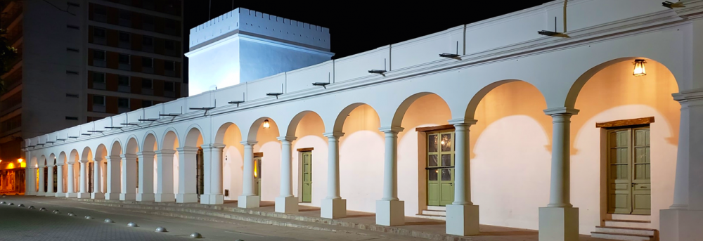
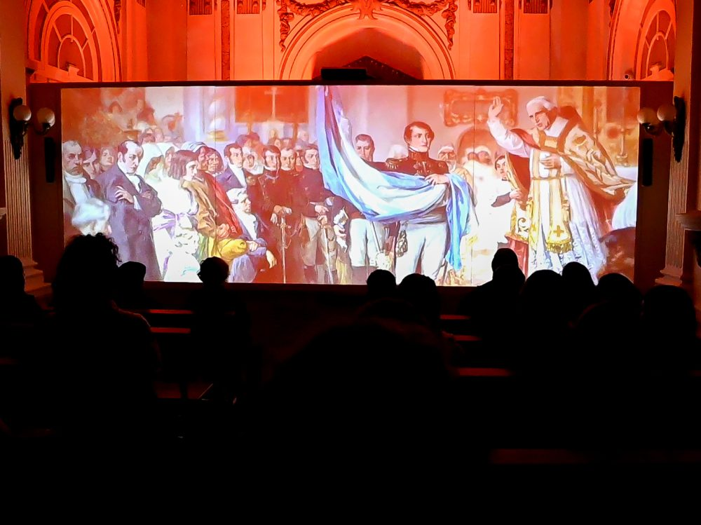
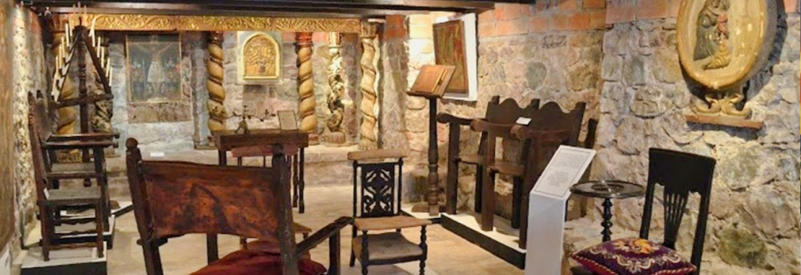
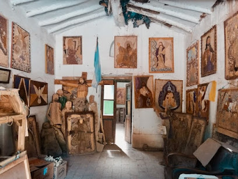
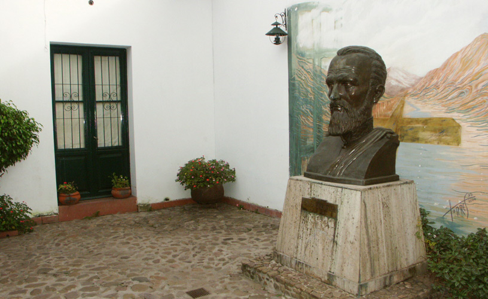
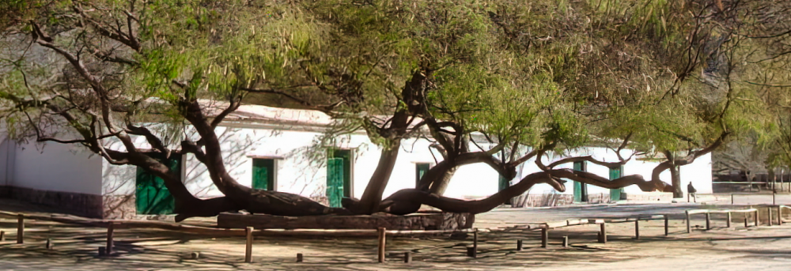
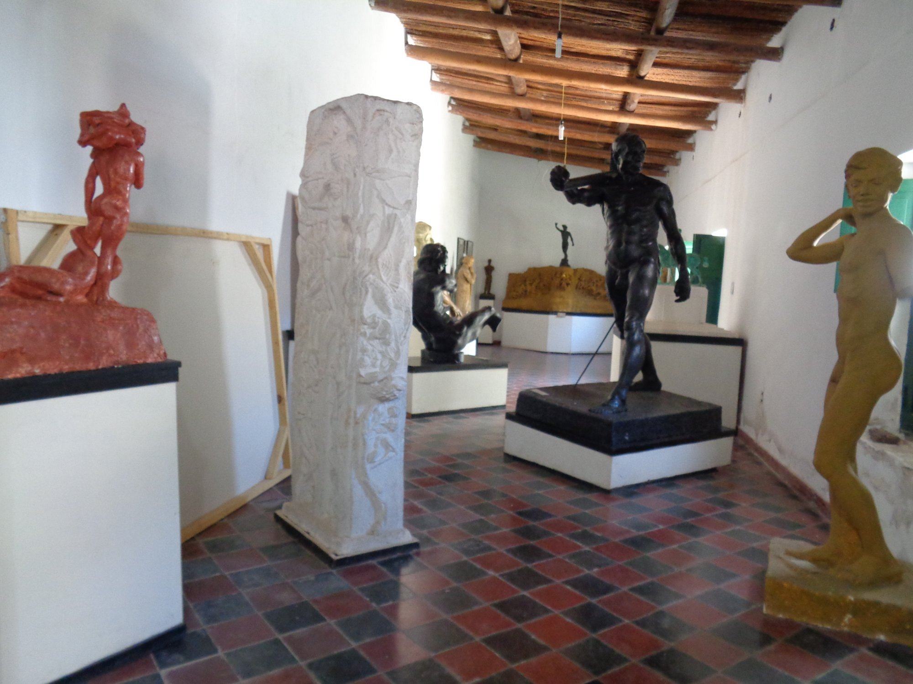

Lista de Museos de Jujuy
(hacer click en la imagen para acceder a la pagína del museo)
Cabildo

Dirección: Gral. Belgrano 493, San Salvador de Jujuy
Centro de Interpretación de la Bandera Nacional de la Libertad Civil y Experiencia Éxodo

Dirección: General San Martín 450, San Salvador de Jujuy
Estatuas de Lola Mora
Dirección: General San Martín 450, San Salvador de Jujuy
Museo Arqueológico Eduardo Casanova
 Dirección: Belgrano 445, Tilcara
Dirección: Belgrano 445, Tilcara
Museo de Arte Sacro San Francisco

Dirección: Belgrano 677, San Salvador de Jujuy
Museo de las Ermitas

Dirección: Rivadavia, entre Jujuy y Ambrosetti, Tilcara
Museo Histórico Provincial Juan Galo Lavalle

Dirección: Lavalle 256, San Salvador de Jujuy
Museo Posta de Hornillos

Dirección:RN9 a 10km de Tilcara
Museo Soto Avedaño

Dirección: Belgrano s/n, Tilcara